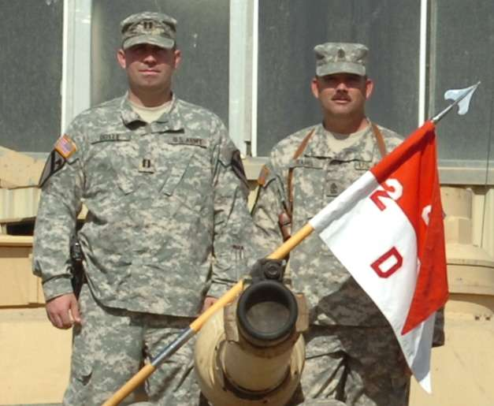
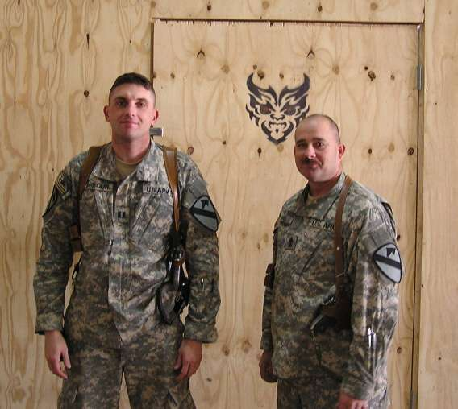
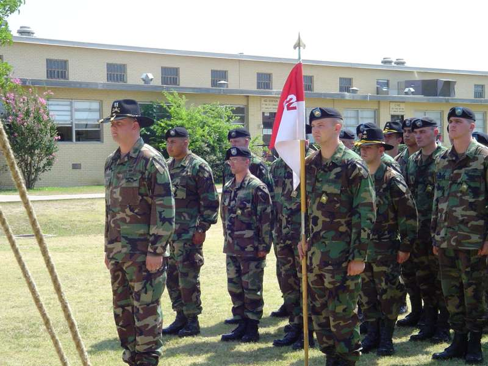
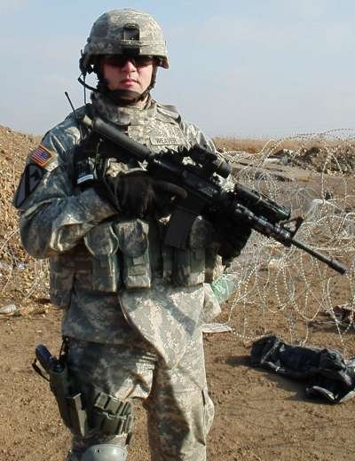

Demon Company Commanders
|
 CPT Mike Doyle, Demon 6, and 1SG William Tramel (July, 2005 - Sept, 2007), Demon 9 of D co/2-8th CAV in Iraq
1SG Tramel has been assigned a different post.
This is his new address:
 CPT Jerome Barbour commanded D 2-8 CAV from Feb, 2006 to Apr 25, 2007 and 1SG William Tramel, Demon 9 of D co/2-8th CAV in Iraq
 CPT Mark Weaver taking command of D 2-8 CAV in 2005
 |